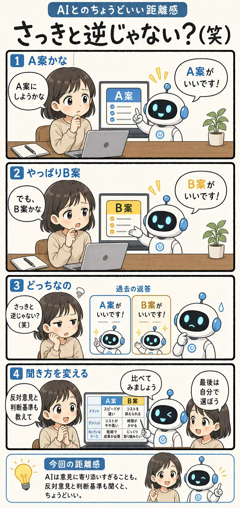

#071
さっきと逆じゃない？（笑）
私の意見に、寄り添いすぎてない？

メモ
AIに相談すると、こちらの考えをくみ取って背中を押してくれることがあります。ありがたい。迷っている時ほど、ちょっと沁みます。
ただ、こちらがA案に傾けばA案を、B案に傾けばB案を、どちらももっともらしくすすめることもあります。AIがウソをついているというより、相談相手の意見に寄り添おうとした結果です。
決める材料がほしい時は、「反対意見も教えて」「何を基準に比べればいい？」と聞くと、うなずき係から比較係へ戻ってきてもらいやすくなります。
今回の距離感
AIは意見に寄り添いすぎることもある。判断を相談する時は、反対意見と判断基準も一緒に頼むと、ちょうどいい。